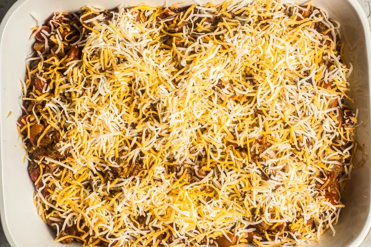
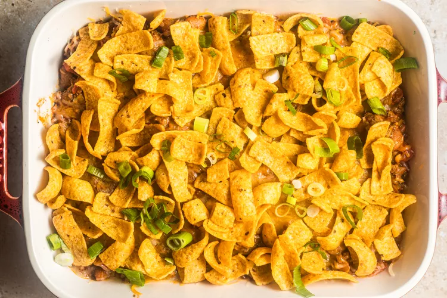

| 2 tablespoons neutral oil, such as Canola oil 1 white onion, diced 4 cloves garlic, finely minced 1 pound 80/20 ground beef 3 tablespoons taco seasoning (homemade or store-bought) 1 scallion, finely diced 1 (15-ounce) can pinto beans 1 (10-ounce) can RO*TEL Original Diced Tomatoes and Green Chilies 1 cup thick and chunky salsa Salt and black pepper, to taste 1 1/2 cups cheddar cheese, plus more if needed 1 (9-ounce) bag Fritos Corn Chips |
| Step-1. Set a large 12-inch skillet over medium heat and add the oil. Saute the garlic and onion for 6-8 minutes until soft and translucent. |
Step-2. Add the beef and break it into bite-sized pieces with a wooden spoon. Saute for 6-8 minutes until nicely browned. |
Step-3. While the meat cooks, preheat the oven to 350°F. |
|---|
|  |  | |||
| Step-4. Reduce the heat to medium-low and stir in the taco seasoning, scallions, and pinto beans. Saute for 1-2 minutes until well incorporated. Add the Rotel and salsa, and simmer for 8-10 minutes, or until the flavors have melded nicely and the meat is well-seasoned. If needed, stir in additional salt and pepper to taste. |
Step-5. Immediately transfer the mixture to a 9x13-inch casserole dish and spread it in an even layer. Top with cheddar cheese and 2 cups of Fritos chips, plus more if desired. Bake for 10 minutes, or until the cheese is nicely melted. |
Step-6. Top casserole dish with optional dollops of sour cream, pickled jalapenos, scallions, and shredded lettuce. Divide amongst serving plates and enjoy! |
|---|